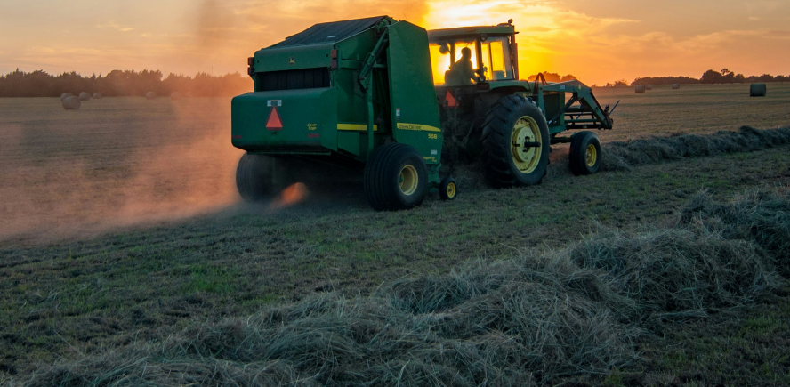
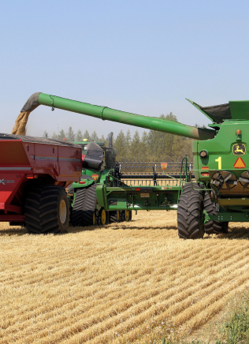

INOVAÇÕES NO AGRO

A agricultura moderna está experimentando uma revolução impulsionada pela tecnologia. Desde a agricultura de precisão, que usa drones e sensores para otimizar o uso de recursos, até a agricultura vertical, que cultiva alimentos em camadas verticais em ambientes controlados, as inovações estão transformando a maneira como cultivamos alimentos. A biotecnologia está produzindo culturas geneticamente modificadas mais resistentes a pragas e condições climáticas adversas, enquanto a Internet das Coisas conecta os agricultores a dados em tempo real sobre o solo e as plantas.
A robótica agrícola está automatizando tarefas como plantio e colheita, enquanto a agricultura regenerativa promove práticas que melhoram a saúde do solo e aumentam a biodiversidade. A tecnologia blockchain está garantindo a transparência e a integridade na cadeia de suprimentos agrícolas. Essas inovações estão moldando o futuro da agricultura, tornando-a mais eficiente, sustentável e resiliente. A agricultura está passando por uma transformação radical, impulsionada pela inovação. A robótica agrícola está revolucionando a maneira como as tarefas são realizadas, desde o plantio até a colheita, aumentando a eficiência e reduzindo a dependência da mão de obra humana. Ao mesmo tempo, a agricultura regenerativa está emergindo como uma abordagem crucial para promover a saúde do solo e a biodiversidade, adotando práticas que restauram ecossistemas agrícolas e reduzem o impacto ambiental. Além disso, a tecnologia blockchain está garantindo transparência e confiabilidade na cadeia de suprimentos agrícolas, promovendo a autenticidade dos produtos desde o campo até o consumidor final.
 Sobre nós
Sobre nós Documentos
Documentos (11) 98954-2349
(11) 98954-2349 farmedcontato@gmail.com
farmedcontato@gmail.com